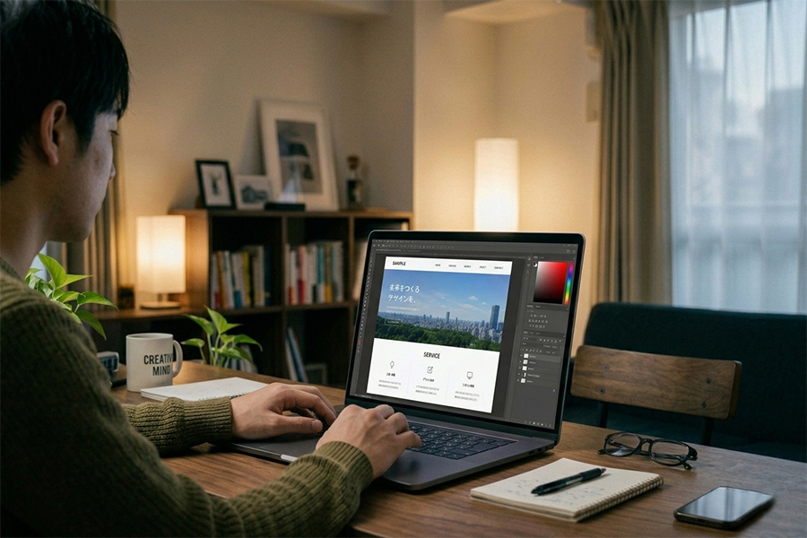
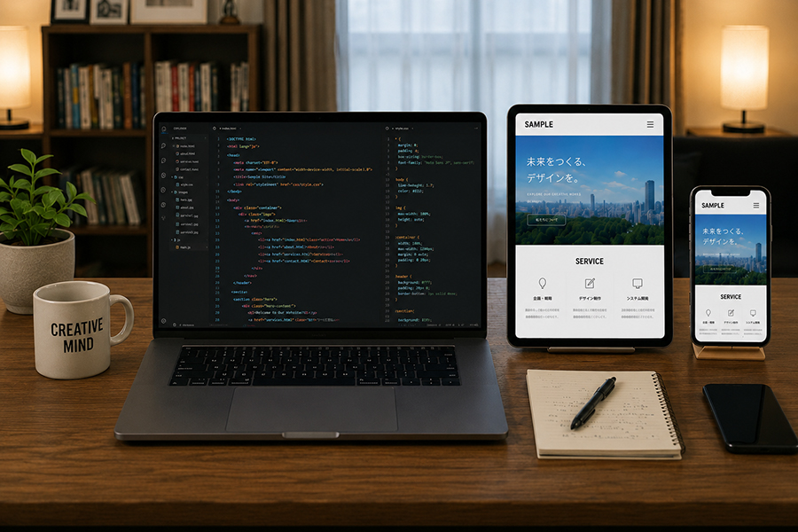
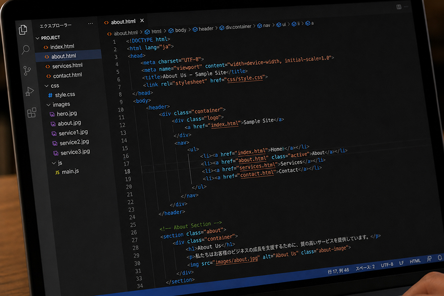
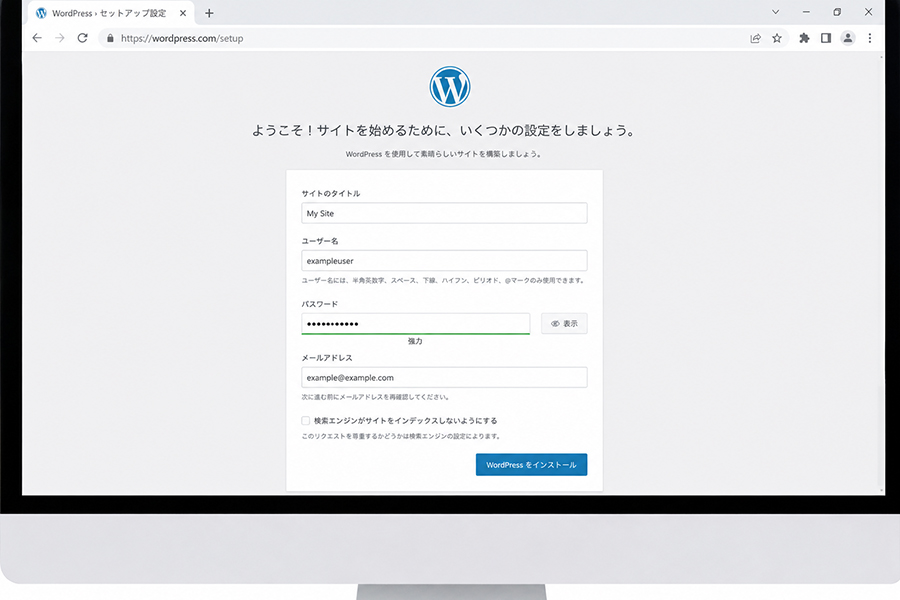
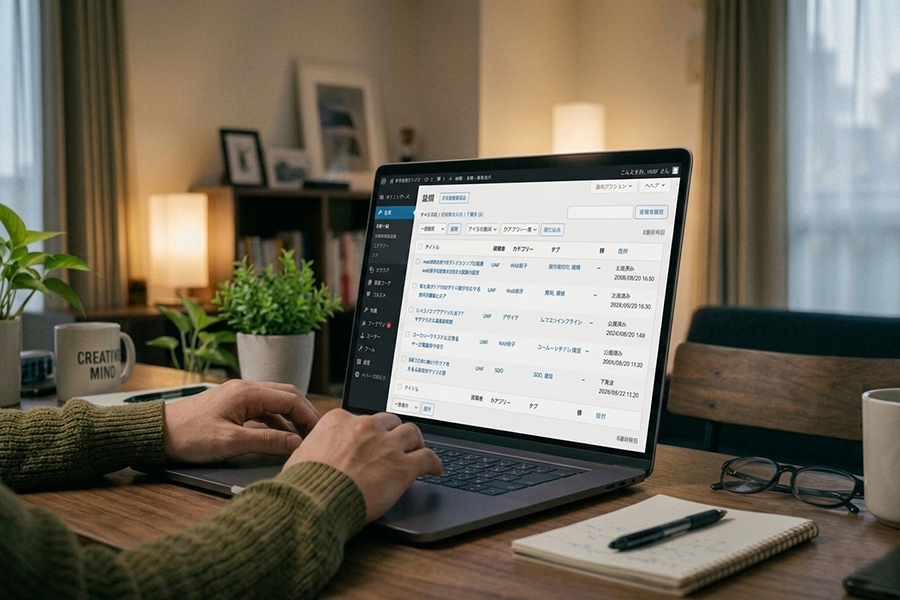
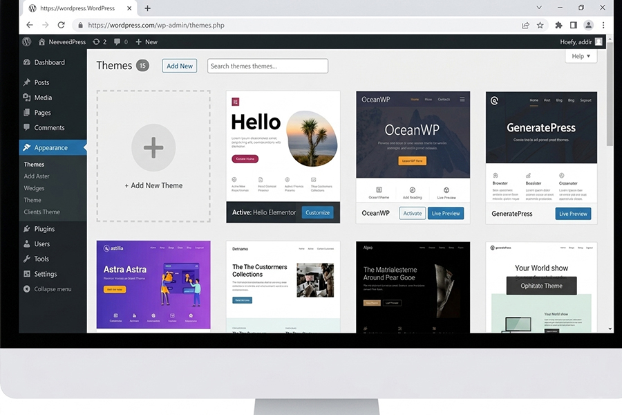
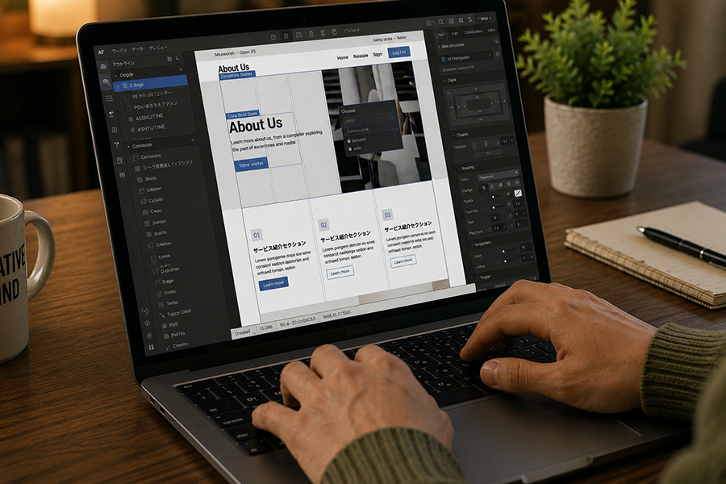
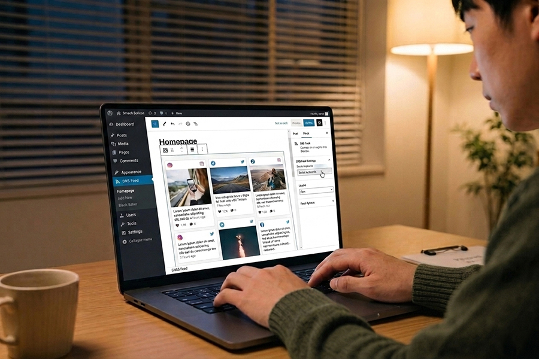
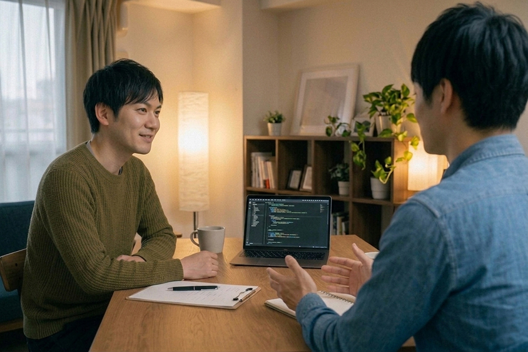

Building,
Growing.
以前からPCを使うことが好きで、自分が学んで身につけたスキルを活かせる仕事がしたいと考えていました。
そこでHTMLやCSSの学習を始めたところ、自分の手でWebサイトを形にしていく面白さや、技術によって表現の幅が広がることに魅力を感じるようになりました。
学習を続けるなかでWeb制作への興味が深まり、本格的にWeb制作の現場で働くことを目指しています。
実務期間
2年
業務内容
・コーディング
HTML / CSS / JavaScrpt
・WordPress
インストール / 初期セットアップ
各種プラグインのインストール・設定
・ノーコード制作
Elementor
・その他業務
写真レタッチなど
01
TOPページのデザイン受領、確認
TOPページのPSDデータを受け取り、デザインや構成内容を確認します。
その後、ディレクターの方と簡単なミーティングを行い、制作フロー全体やコーディングを進める上での確認事項について認識を合わせます。

02
TOPページコーディング（レスポンシブまで）
TOPページのコーディングを進め、まずは動的な要素を除いた状態で実装を完成させます。
その後、レスポンシブ対応を行い、各デバイスにおいて細部までデザインを忠実に再現します。
実装中はディレクターの方と適宜コミュニケーションを取り、認識のずれによる手戻りが発生しないよう心がけながら作業を進めました。

03
下層ページコーディング
TOPページの実装完了後、各下層ページのコーディングを進めます。
下層ページについては、デザイナーの方の工数削減を目的として、簡易的なデザインカンプや口頭での指示のみで実装を行うことも多く、密に連携を取りながら進めることを意識しました。

04
細かい動きの実装と微調整
動きを除いたコーディングの完了後、各部のアニメーションやUIの動きを実装し、細かな調整を行います。
この工程はすべて口頭でのコミュニケーションをもとに進めており、要望の意図を汲み取りながら実装と調整を重ねました。
05
WordPress初期セットアップ～実装
コーディング完了後は、WordPressの初期設定や指定されたプラグインのインストール・設定を行い、自作テーマへコーディングファイルを組み込みます。
WordPressは業務開始時点ではほとんど未経験でしたが、実際の案件を通して経験を積み、実装や運用に必要な知識を身につけることができました。

06
ブログ機能部分の調整
WordPressのブログ機能を利用する案件が多かったため、投稿ページや一覧ページについても細部のデザイン調整を行いました。
デザイナーの方の指示を受けながら、コーディングによって作成されたページとデザインとの整合性を意識し、統一感のある表示になるよう調整を進めました。

07
最終調整・納品
制作の各工程が完了した後、デザインやアニメーション、UIの動作確認を行い、必要に応じて微調整を加えます。また、コードの整理やミス・見落としの確認も行い、納品に向けた最終チェックを実施します。
納期に余裕がある場合は、ディレクターの方の指示のもと、さらなる品質向上のための調整も行いました。
01
WordPress初期セットアップ
ノーコードでの制作は、主にWordPressテーマやElementorを用いて行います。まずはWordPressの初期セットアップを行い、制作に必要な環境を整えます。
02
テーマのインストールと操作確認
使用するWordPressテーマのインストールを行い、Elementorで制作する場合はあわせて導入と初期設定を進めます。
また、後の作業を円滑に進められるよう、実装前の段階でテーマやElementorの各種機能・操作を確認し、必要な知識を事前に身につけることを心がけました。

03
TOPページ作成
TOPページの作成から着手し、レスポンシブ対応やアニメーションの実装もあわせて進めます。
特にElementorを使用する場合は、納品後にお客様自身で編集を行うケースもあるため、Web制作の専門知識がない方でもできるだけ扱いやすく、編集しやすい構成を意識して作成しました。

04
下層ページ作成
TOPページの作成完了後は、各下層ページの作成を進めます。
下層ページはお客様自身が更新や編集を行う機会が多いため、ディレクターの方と相談しながら、運用時の使いやすさを考慮した構成や設計を意識して作成しました。
05
各種プラグイン実装
各ページの作成完了後は、必要なプラグインのインストールと設定を行います。
お客様自身でサイトを運用されるケースでは、SNSのフィードなどブログ投稿以外の情報発信機能を実装することもありました。その際は、更新や管理がしやすく、継続的に運用しやすい構成を意識して設定を行いました。

06
最終調整・納品
制作工程が一通り完了した後、デザインや動きの調整、不具合の確認など最終的な見直しを行います。
また、納品後のお客様による運用や編集のしやすさについて、ディレクターの方と改めて確認しながら調整を進め、安心して利用できる状態で納品できるようにします。

学習期間：1カ月
コーディング学習は、プログラミング学習サービス「Progate」から始めました。コーディングやプログラミングは未経験だったため、複数の書籍や学習サービスを比較した中で、初心者でも取り組みやすいと感じたProgateを選択しました。学習を進める中で、Web制作に必要な基本的な考え方やコーディングの基礎を身につけることができ、同時に自分で形にしていく面白さや達成感を実感しました。
学習期間：2カ月
Progateでコーディングの基礎を学びましたが、初心者向けの内容が中心であったため、実務に携わるには知識量が不足していると感じていました。そこで、より幅広い知識を身につけるためにドットインストールでの学習を開始し、HTML・CSS・JavaScriptなどを継続的に学習しました。この経験が土台となり、実際の制作現場では知識不足による大きなつまずきが少なく、スムーズに業務へ取り組むことができました。
学習期間：1カ月
基礎知識を身につけた後は、教科書的な内容だけでなく、現場で実際に使われる実践的なコーディング技術を学ぶ必要があると感じました。そこで複数の書籍を比較した結果、自身の学習目的に最も合っていると感じたこちらの書籍で学習を進めました。その後、実際にコーディングの実務に携わるなかで、書籍で学んだ内容がそのまま活きる場面がとても多く、実践的な知識を身につけるうえで非常に有意義な学習だったと実感しています。
学習期間：3カ月（実務期間中）
HTML・CSSは学習と実務を通してある程度身につけることができましたが、JavaScriptについてはほとんど理解できていない状態でした。実務経験を積むなかで、習得の必要性を強く感じるようになり、こちらの書籍で学習を開始しました。これまでとは異なり、プログラミング特有の考え方を身につけるのにとても苦労しましたが、実務と並行しながら学習を継続しました。その結果、一冊を通してJavaScriptの基礎を身につけることができました。
学習期間：6カ月（実務期間中）
書籍で基礎を学び、実務でも少しずつJavaScriptを扱うようになりました。しかし、意図した通りに動作しない場面も多く、課題を感じることが増えていきました。その原因を考えた結果、知識量の不足だけでなく、JavaScriptの本質的な理解が十分ではないことに気づきました。現役エンジニアの方からのアドバイスを受け、『JavaScript Primer』で学習を進めたことで、これまで曖昧だった部分を体系的に理解できました。現在も、復習や問題解決の際に活用しています。
Yukito Inoue
東京在住。京都精華大学 デザイン学部卒業。
2016年よりイラストレーターとして、書籍や広告、webなどの媒体で活動。
2022年12月には、初めての作品集となる『DAISUKI』が出版された。
個展などで積極的に作品発表も行う。動物と青色が好き。
青を基調とした彩色と、かわいらしい動物が特長の世界観。
観る人の心にそっと寄り添うあたたかみのあるアート作品。